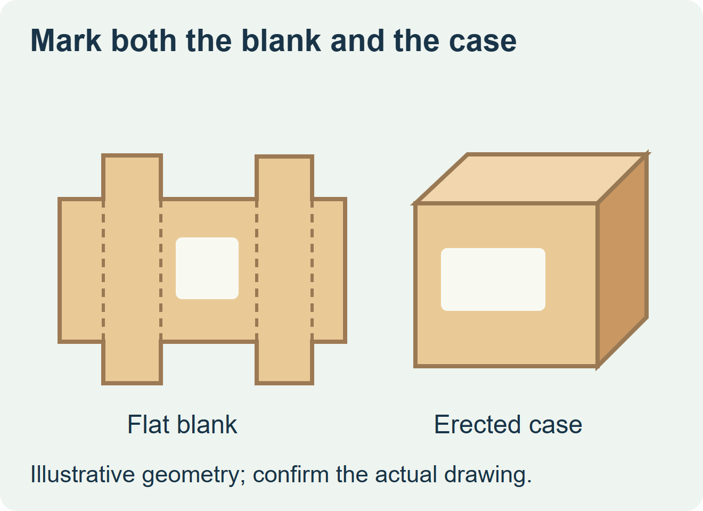
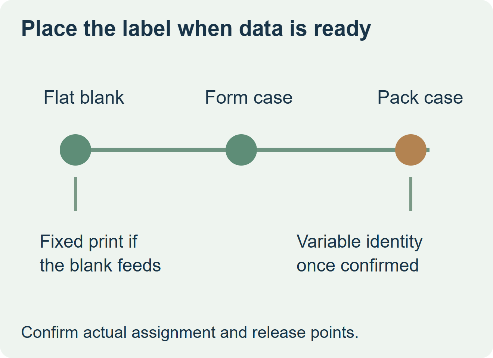

Put a label on the flat blank only if its information is settled before packing and a labeled blank feeds and erects correctly. If the SKU, lot, quantity or unit identity is assigned at packing, apply the identity label when the line can verify it against the actual case. A fixed graphic and a later variable label can share the same case when each has an approved landing zone.


Walk one blank through the erector
Mark the proposed position on the supplier drawing and on a real flat blank. Follow that area through stacking, pickup, forming and sealing. A location that is flat and accessible before erection can become a fold or handling contact once the machine forms the case. Paperboard manufacturer Holmen Iggesund describes how flat blanks are formed in packaging equipment. Domino’s equipment guide describes the corrugated case erector and downstream print-and-apply arrangements. Use the actual corrugated-case and machine drawings to check contact points. Holmen Iggesund’s packaging operation guide and Domino’s integration guide
Choose the station from the first reliable data
| Information or route | Preferred point to evaluate | Proof to request |
|---|---|---|
| Fixed graphic on every case of the same version | Flat blank if the feeder, forming and final face all qualify | A labeled stack run through the actual pickup and former; inspect the finished case. |
| SKU or lot changes at packing | After contents are known and matched to the case | A packing run with a product change and a controlled reprint or reject check. |
| Common graphic plus event data | Fixed graphic upstream, variable label after assignment | Two distinct zones and a check that current information stays visible. |


Quote the practical handoff
In a hypothetical snack co-packing job, one stock case serves several flavors. A fixed handling graphic may go on the blank after the labeled-stack trial. The flavor and lot label should follow packing because that is where the current assignment can be confirmed. Ask who will supply the fixed artwork and who will generate the variable label, and check how staged blanks remain interchangeable between flavors.
For the blank route, run a representative stack through the actual line and compare pickup, feeding and finished label condition with unlabeled stock. For the packed-case route, check the case presentation, label landing and identity at the receiving view. Compare the same accepted case quantity on each quote, including the separate application or print step when the route needs it.
Discuss the unresolved label requirement
Send the flat case drawing, an erected case photo, the feeder and applicator position, the fields available before and after packing, and quantities by case version. Mark the finished face and any fold, gripper or stacking contact. Review food label options and prepare a label specification inquiry. The contact page opens an email draft and lists email or WhatsApp for attachments. Supply, proof options, testing, pricing and timing require project confirmation.